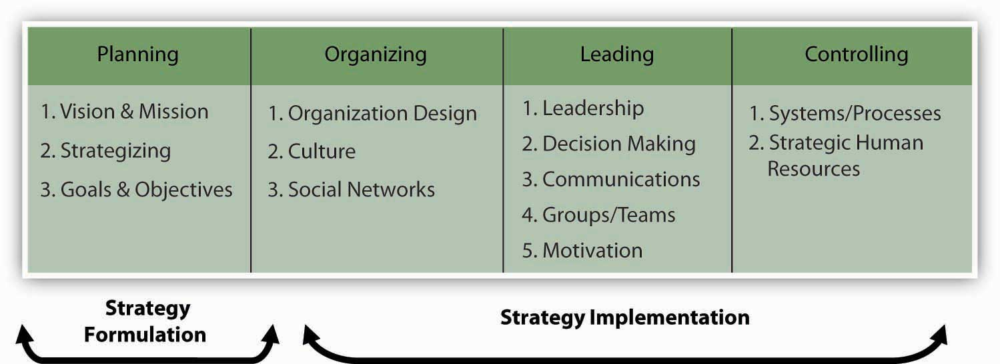
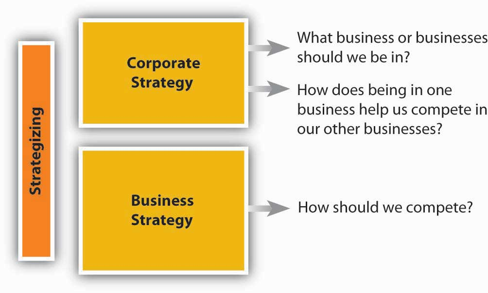
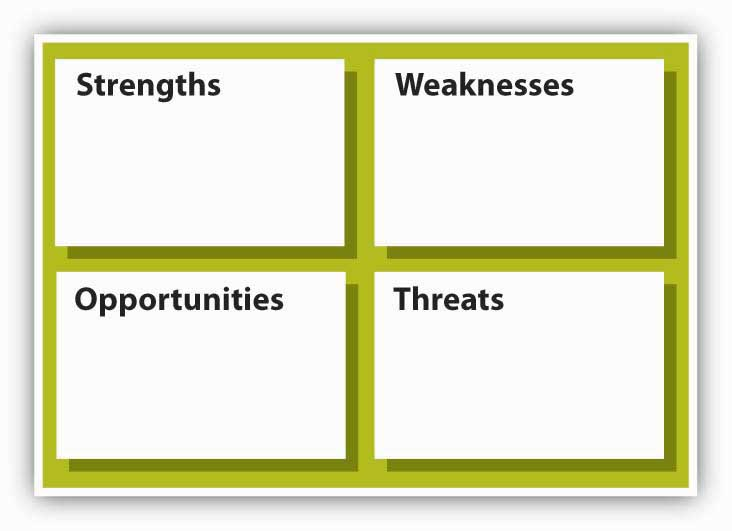
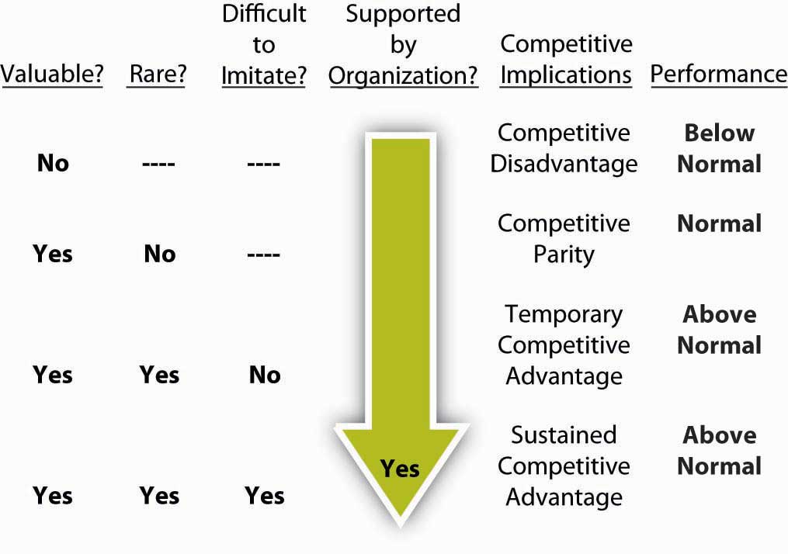
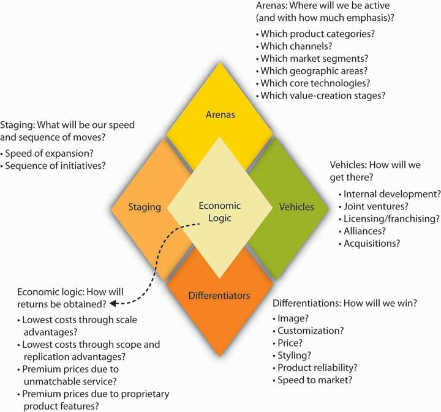
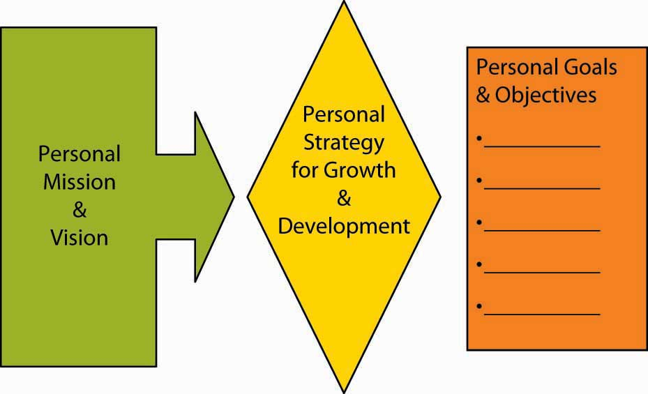

Reading this chapter will help you do the following:
Strategic management, strategizing for short, is essentially about choice—in terms of what the organization will do and won’t do to achieve specific goals and objectives, where such goals and objectives lead to the realization of a stated mission and vision. Strategy is a central part of the planning function in P-O-L-C. Strategy is also about making choices that provide an organization with some measure of competitive advantage or even a sustainable competitive advantage. For the most part, this chapter emphasizes strategy formulation (answers to the “What should our strategy be?” question) as opposed to strategy implementation (answers to questions about “How do we execute a chosen strategy?”). The central position of strategy is summarized in the following figure. In this chapter, you will learn about strategic management and how it fits in the P-O-L-C framework. You will also learn some of the key internal and external analyses that support the development of good strategies. Finally, you will see how the concept of strategy can be applied to you personally, in addition to professionally.
Figure 5.2 The P-O-L-C Framework

Figure 5.3 Where Strategy Fits in “Planning”
Figure 5.4 Unnamed Publisher Cofounder, Jeff Shelstad

Source: Used by permission from Unnamed Publisher Inc.
Two textbook publishing industry veterans, Jeff Shelstad and Eric Frank, started Unnamed Publisher, a privately held company, in 2007 to be a new and disruptive model for the college textbook market. Traditional business textbook publishers carry a portfolio of 5 to 10 titles per subject and charge premium prices for new textbooks, an average of $1,000 in textbooks for a college student’s first year, according to a recent General Accounting Office (GAO) report. FWK’s strategy aims to turn the traditional model on its head by providing online textbook access free to students (http://www.gone.2012books.lardbucket.org). FWK earns revenues by selling students the digital textbooks in alternate formats, print and audio initially, and also by selling highly efficient and mobile study aids. Despite the fact that professors have rated the academic quality of FWK textbooks as equal to or higher than that of textbooks from traditional publishers, the cost to students is a fraction of current market prices due to the efficiencies of the FWK business model. Moreover, with FWK’s open-source platform, instructors who adopt FWK books for their classes are able to pick and choose the material provided to their students, even if it is from earlier versions of textbooks that have since been revised.
Shelstad and Frank founded FWK because they believed that big publishers would continue to experiment and innovate, and enjoy the advantages of scale, capital, content, and brand. But the FWK founders also believed that the pace and nature of change by the big publishers of the textbook industry would remain modest and marginal, held back by an inflexible go-to market strategy, with a reflexive (and shortsighted) exercise of pricing power, outdated business models, intransigent channel partners, existing contracts, and a fear of price cannibalization, as well as the traditional culture and organizational barriers.
To seize this perceived market opportunity, FWK designed a strategy based on publishing textbooks around the three main pillars of books that are (1) free, (2) open, and (3) authored by highly respected authors. Ultimately students (or parents) pay for books. Between a publisher and the student is a gatekeeper—the instructor. The first step to revenue is to convince the gatekeeper to assign (“adopt”) an FWK textbook instead of other choices. Only then does FWK establish a relationship with the gatekeeper’s students and earn the opportunity to monetize those relationships through the sale of print books, study aids, user-generated content, and corporate sponsorship. FWK’s strategy, therefore, aims to provide a compelling value proposition to instructors to maximize adoptions and, thus, student relationships.
How is FWK’s strategy working so far? Through the start of 2010, the FWK strategy has proven effective. New customers and books come online daily and the growth trends are positive. Its first term (fall of 2009), FWK had 40,000 students using its textbooks. This has continued to rise. Several new projects are under way in international business, entrepreneurship, legal environment, and mathematical economics. Media attention to the fledgling FWK has generally been favorable. Social media experts also gave the company accolades. For example, Chris Anderson devoted a page to the FWK business model in his bestselling book Free. Moreover, early user reviews of the product were also very positive. For instance, an instructor who adopted Principles of Management noted, “I highly recommend this book as a primary textbook for…business majors. The overall context is quite appropriate and the search capability within the context is useful. I have been quite impressed [with] how they have highlighted the key areas.” At the same time, opportunities to improve the Web interface still existed, with the same reviewer noting, “The navigation could be a bit more user friendly, however.” FWK uses user input like this to better adjust the strategy and delivery of its model. This type of feedback led the FWK design squad to improve its custom Web interface, so that instructors can more easily change the book. Only time will tell if the $11 million invested in FWK by 2010 will result in the establishment of a new titan in textbook publishing or will be an entrepreneurial miss.
Case written by [citation redacted per publisher request]. Based on information from United States Government Accountability Office. (2005, July). College textbooks: Enhanced offering appear to drive recent price increases (GAO-05-806). Retrieved April 22, 2010, from http://www.gao.gov/cgi-bin/getrpt?GAO-05-806; Unnamed Publisher Web site: http://www.gone.2012books.lardbucket.org; Community College Open Textbook Collaborative. (2009). Business reviews. Retrieved April 22, 2010, from http://www.collegeopentextbooks.org/reviews/business.html; Personal interviews with Jeff Shelstad and Eric Frank.
Figure 5.6

Source: Porter, M. E. (1980). Competitive Strategy. New York: Free Press.
As you already know, the P-O-L-C framework starts with “planning.” You might also know that planning is related to, but not synonymous with, strategic management. Strategic managementWhat an organization does to achieve its mission and vision. reflects what a firm is doing to achieve its mission and vision, as seen by its achievement of specific goals and objectives.
A more formal definition tells us that the strategic management processA comprehensive and ongoing management process aimed at formulating and implementing effective strategies; it is a way of approaching business opportunities and challenges such that the firm achieves its vision and mission. “is the process by which a firm manages the formulation and implementation of its strategy.”Carpenter, M. A., & Sanders, W. G. (2009). Strategic management (p. 8). Upper Saddle River, NJ: Pearson/Prentice-Hall. The strategic management process is “the coordinated means by which an organization achieves its goals and objectives.”Carpenter, M. A., & Sanders, W. G. (2009). Strategic management (p. 10). Upper Saddle River, NJ: Pearson/Prentice-Hall. Others have described strategy as the pattern of resource allocation choices and organizational arrangements that result from managerial decision making.Mintzberg, H. 1978. Patterns in strategy formulation. Management Science, 24, 934–949. Planning and strategy formulationSynonymous with business planning and strategic planning. The set of processes involved in creating or determining the strategies of the organization; it focuses on the content of strategies. sometimes called business planning, or strategic planning, have much in common, since formulation helps determine what the firm should do. Strategy implementationThe methods by which strategies are operationalized or executed within the organization; it focuses on the processes through which strategies are achieved. tells managers how they should go about putting the desired strategy into action.
The concept of strategy is relevant to all types of organizations, from large, public companies like GE, to religious organizations, to political parties.
If vision and mission are the heart and soul of planning (in the P-O-L-C framework), then strategy, particularly strategy formulation, would be the brain. The following figure summarizes where strategy formulation (strategizing) and implementation fit in the planning and other components of P-O-L-C. We will focus primarily on the strategy formulation aspects of strategic management because implementation is essentially organizing, leading, and controlling P-O-L-C components.
Figure 5.7 Strategizing in P-O-L-C
You see that planning starts with vision and mission and concludes with setting goals and objectives. In-between is the critical role played by strategy. Specifically, a strategy captures and communicates how vision and mission will be achieved and which goals and objectives show that the organization is on the right path to achieving them.
At this point, even in terms of strategy formulation, there are two aspects of strategizing that you should recognize. The first, corporate strategyThe set of strategic alternatives that an organization chooses from as it manages its operations simultaneously across several industries and several markets. answers strategy questions related to “What business or businesses should we be in?” and “How does our business X help us compete in business Y, and vice versa?” In many ways, corporate strategy considers an organization to be a portfolio of businesses, resources, capabilities, or activities. You are probably familiar with McDonald’s, for instance, and their ubiquitous golden arches fast-food outlets. However, you may be less likely to know that McDonald’s owned the slightly upscale burrito vendor Chipotle for several years as well.Carpenter, M. A., & Sanders, W. G. (2008). Fast food chic? The Chipotle burrito. University of Wisconsin Business Case. The McDonald’s corporate strategy helped its managers evaluate and answer questions about whether it made sense for McDonald’s set of businesses to include different restaurants such as McDonald’s and Chipotle. While other food-service companies have multiple outlets—YUM! Brands, for example, owns A&W, Taco Bell, Pizza Hut, Long John Silver’s, and Kentucky Fried Chicken—McDonald’s determined that one brand (McDonald’s) was a better strategy for it in the future, and sold off Chipotle in 2006. The following figure provides a graphic guide to this kind of planning.
Figure 5.8 Corporate and Business Strategy
The logic behind corporate strategy is one of synergy and diversification. That is, synergies arise when each of YUM! Brands food outlets does better because they have common ownership and can share valuable inputs into their businesses. Specifically, synergyThe interaction of two or more activities, creating a combined effect greater than the sum of their individual efforts. exists when the interaction of two or more activities (such as those in a business) create a combined effect greater than the sum of their individual effects. The idea is that the combination of certain businesses is stronger than they would be individually because they either do things more cheaply or of higher quality as a result of their coordination under a common owner.
DiversificationThe number of different businesses that an organization is engaged in and the extent to which these businesses are related to one another. in contrast, is where an organization participates in multiple businesses that are in some way distinct from each other, as Taco Bell is from Pizza Hut, for instance. Just as with a portfolio of stock, the purpose of diversification is to spread out risk and opportunities over a larger set of businesses. Some may be high growth, some slow growth or declining; some may perform worse during recessions, while others perform better. Sometimes the businesses can be very different, such as when fashion sunglass maker Maui Jim diversified into property and casualty insurance through its merger with RLI Corporation.Retrieved October 30, 2008, http://www.secinfo.com/dRqWm.89X3.htm#34f. Perhaps more than a coincidence, RLI was founded some 60 years earlier as Replacement Lens International (later changed to its abbreviation, RLI, in line with its broader insurance products offerings), with the primary business of providing insurance for replacement contact lenses. There are three major diversification strategies: (1) concentric diversification, where the new business produces products that are technically similar to the company’s current product but that appeal to a new consumer group; (2) horizontal diversification, where the new business produces products that are totally unrelated to the company’s current product but that appeal to the same consumer group; and (3) conglomerate diversification, where the new business produces products that are totally unrelated to the company’s current product and that appeal to an entirely new consumer group.
Whereas corporate strategy looks at an organization as a portfolio of things, business strategyThe set of strategic alternatives that an organization chooses from as it conducts business in a particular industry or market. focuses on how a given business needs to compete to be effective. Again, all organizations need strategies to survive and thrive. A neighborhood church, for instance, probably wants to serve existing members, build new membership, and, at the same time, raise surplus monies to help it with outreach activities. Its strategy would answer questions surrounding the accomplishment of these key objectives. In a for-profit company such as McDonald’s, its business strategy would help it keep existing customers, grow its business by moving into new markets and taking customers from competitors like Taco Bell and Burger King, and do all this at a profit level demanded by the stock market.
So what are the inputs into strategizing? At the most basic level, you will need to gather information and conduct analysis about the internal characteristics of the organization and the external market conditions. This means an internal appraisal and an external appraisal. On the internal side, you will want to gain a sense of the organization’s strengths and weaknesses; on the external side, you will want to develop some sense of the organization’s opportunities and threats. Together, these four inputs into strategizing are often called SWOT analysisAn assessment of strengths, weaknesses, opportunities, and threats. which stands for strengths, weaknesses, opportunities, and threats (see the SWOT analysis figure). It does not matter if you start this appraisal process internally or externally, but you will quickly see that the two need to mesh eventually. At the very least, the strategy should leverage strengths to take advantage of opportunities and mitigate threats, while the downside consequences of weaknesses are minimized or managed.
Figure 5.9 SWOT Analysis
SWOT was developed by Ken Andrews in the early 1970s.Andrews, K. (1971). The concept of corporate strategy. Homewood, IL: R. D. Irwin. An assessment of strengths and weaknesses occurs as a part of organizational analysis; that is, it is an audit of the company’s internal workings, which are relatively easier to control than outside factors. Conversely, examining opportunities and threats is a part of environmental analysis—the company must look outside of the organization to determine opportunities and threats, over which it has lesser control.
Andrews’s original conception of the strategy model that preceded the SWOT asked four basic questions about a company and its environment: (1) What can we do? (2) What do we want to do? (3) What might we do? and (4) What do others expect us to do?
A good starting point for strategizing is an assessment of what an organization does well and what it does less well. In general good strategies take advantage of strengths and minimize the disadvantages posed by any weaknesses. Michael Jordan, for instance, is an excellent all-around athlete; he excels in baseball and golf, but his athletic skills show best in basketball. As with Jordan, when you can identify certain strengths that set an organization well apart from actual and potential competitors, that strength is considered a source of competitive advantage. The hardest thing for an organization to do is to develop its competitive advantage into a sustainable competitive advantageA competitive advantage that will exist after all attempts at strategic imitation have ceased. where the organization’s strengths cannot be easily duplicated or imitated by other firms, nor made redundant or less valuable by changes in the external environment.
On the basis of what you just learned about competitive advantage and sustainable competitive advantage, you can see why some understanding of the external environment is a critical input into strategy. Opportunities assess the external attractive factors that represent the reason for a business to exist and prosper. These are external to the business. What opportunities exist in its market, or in the environment, from which managers might hope the organization will benefit? Threats include factors beyond your control that could place the strategy, or the business, at risk. These are also external—managers typically have no control over them, but may benefit by having contingency plans to address them if they should occur.
Unnamed Publisher is a new college textbook company (and the publisher of this POM text!) that operates with the tagline vision of “Free textbooks. Online. Anytime. Anywhere. Anyone.”Retrieved October 28, 2008, from http://www.gone.2012books.lardbucket.org.
Strengths
Weaknesses
Opportunities
Threats
In a nutshell, SWOT analysis helps you identify strategic alternatives that address the following questions:
Before wrapping up this section, let’s look at a few of the external and internal analysis tools that might help you conduct a SWOT analysis. These tools are covered in greater detail toward the end of the chapter.
Internal analysis tools help you identify an organization’s strengths and weaknesses. The two tools that we identify here, and develop later in the chapter, are the value chain and VRIO tools. The value chain asks you, in effect, to take the organization apart and identify the important constituent parts. Sometimes these parts take the form of functions, like marketing or manufacturing. For instance, Disney is really good at developing and making money from its branded products, such as Cinderella or Pirates of the Caribbean. This is a marketing function (it is also a design function, which is another Disney strength).
Value chain functions are also called capabilities. This is where VRIO comes in. VRIO stands for valuable, rare, inimitable, and organization—basically, the VRIO framework suggests that a capability, or a resource, such as a patent or great location, is likely to yield a competitive advantage to an organization when it can be shown that it is valuable, rare, difficult to imitate, and supported by the organization (and, yes, this is the same organization that you find in P-O-L-C). Essentially, where the value chain might suggest internal areas of strength, VRIO helps you understand whether those strengths will give it a competitive advantage. Going back to our Disney example, for instance, strong marketing and design capabilities are valuable, rare, and very difficult to imitate, and Disney is organized to take full advantage of them.
While there are probably hundreds of different ways for you to study an organizations’ external environment, the two primary tools are PESTEL and industry analysis. PESTEL, as you probably guessed, is simply an acronym. It stands for political, economic, sociocultural, technological, environmental, and legal environments. Simply, the PESTEL framework directs you to collect information about, and analyze, each environmental dimension to identify the broad range of threats and opportunities facing the organization. Industry analysis, in contrast, asks you to map out the different relationships that the organization might have with suppliers, customers, and competitors. Whereas PESTEL provides you with a good sense of the broader macro-environment, industry analysis should tell you about the organization’s competitive environment and the key industry-level factors that seem to influence performance.
Strategy formulation is an essential component of planning; it forms the bridge that enables the organization to progress from vision and mission to goals and objectives. In terms of the P-O-L-C framework, strategy formulation is the P (planning) and strategy implementation is realized by O-L-C. Corporate strategy helps to answer questions about which businesses to compete in, while business strategy helps to answer questions about how to compete. The best strategies are based on a thorough SWOT analysis—that is, a strategy that capitalizes on an organization’s strengths, weaknesses, opportunities, and threats.
How do the strategies we see in organizations come into being? In this section, you will learn about intended and realized strategies. The section concludes with discussion of how strategies are made.
The best-laid plans of mice and men often go awry.
Robert Burns, “To a Mouse,” 1785
This quote from English poet Robert Burns is especially applicable to strategy. While we have been discussing strategy and strategizing as if they were the outcome of a rational, predictable, analytical process, your own experience should tell you that a fine plan does not guarantee a fine outcome. Many things can happen between the development of the plan and its realization, including (but not limited to): (1) the plan is poorly constructed, (2) competitors undermine the advantages envisioned by the plan, or (3) the plan was good but poorly executed. You can probably imagine a number of other factors that might undermine a strategic plan and the results that follow.
How organizations make strategy has emerged as an area of intense debate within the strategy field. Henry Mintzberg and his colleagues at McGill University distinguish intended, deliberate, realized, and emergent strategies.Mintzberg, H. (1987, July–August). Crafting strategy. Harvard Business Review, pp. 66–75; Mintzberg, H. (1996). The entrepreneurial organization. In H. Mintzberg & J. B. Quinn (Eds.), The strategy process (3rd ed.). Englewood Cliffs, NJ: Prentice-Hall; Mintzberg, H., & Waters, J. A. (1985). Of strategies, deliberate and emergent. Strategic Management Journal, 6, 257–272.These four different aspects of strategy are summarized in the following figure. Intended strategyThe strategy conceived of by managers and the impetus for initial attempts at strategy implementation. is strategy as conceived by the top management team. Even here, rationality is limited and the intended strategy is the result of a process of negotiation, bargaining, and compromise, involving many individuals and groups within the organization. However, realized strategyThe actual strategy that is implemented and comes to fruition as a consequence of implementation and other internal and external factors.—the actual strategy that is implemented—is only partly related to that which was intended (Mintzberg suggests only 10%–30% of intended strategy is realized).
Figure 5.11 Intended, Deliberate, Realized, and Emergent Strategies
The primary determinant of realized strategy is what Mintzberg terms emergent strategyA pattern of action that develops over time in an organization in the absence of vision, mission, and goals, or despite missions and goals, or in addition to what was conceived of in the intended and deliberate strategies.—the decisions that emerge from the complex processes in which individual managers interpret the intended strategy and adapt to changing external circumstances.See Mintzberg, H. Patterns in strategy formulation. (1978). Management Science, 24, 934–948; Mintzberg, H., & Waters, J. A. (1985). Of strategies, deliberate and emergent. Strategic Management Journal, 6, 257–272. (1985); and Mintzberg, H. (1988). Mintzberg on management: Inside our strange world of organizations. New York: Free Press. Thus, the realized strategy is a consequence of deliberateA plan of action, flowing from the intended strategy, that an organization chooses and implements to support its vision, mission, and goals. and emerging factors. Analysis of Honda’s successful entry into the U.S. motorcycle market has provided a battleground for the debate between those who view strategy making as primarily a rational, analytical process of deliberate planning (the design school) and those that envisage strategy as emerging from a complex process of organizational decision making (the emergence or learning school).The two views of Honda are captured in two Harvard cases: Honda [A]. (1989). Boston: Harvard Business School, Case 384049, and Honda [B]. (1989). Boston: Harvard Business School, Case 384050.
Although the debate between the two schools continues,For further debate of the Honda case, see Mintzberg, H., Pascale, R. T., Goold, M., & Rumelt, Richard P. (1996, Summer). The Honda effect revisited. California Management Review, 38, 78–117. we hope that it is apparent to you that the central issue is not “Which school is right?” but “How can the two views complement one another to give us a richer understanding of strategy making?” Let us explore these complementarities in relation to the factual question of how strategies are made and the normative question of how strategies should be made.
Robert Grant, author of Contemporary Strategy Analysis, shares his view of how strategy is made as follows.Grant, R. M. (2002). Contemporary strategy analysis (4th ed., pp. 25–26). New York: Blackwell. For most organizations, strategy making combines design and emergence. The deliberate design of strategy (through formal processes such as board meetings and strategic planning) has been characterized as a primarily top-down process. Emergence has been viewed as the result of multiple decisions at many levels, particularly within middle management, and has been viewed as a bottom-up process. These processes may interact in interesting ways. At Intel, the key historic decision to abandon memory chips and concentrate on microprocessors was the result of a host of decentralized decisions taken at divisional and plant level that were subsequently acknowledged by top management and promulgated as strategy.Burgelman, R. A., & Grove, A. (1996, Winter). Strategic dissonance. California Management Review, 38, 8–28.
In practice, both design and emergence occur at all levels of the organization. The strategic planning systems of large companies involve top management passing directives and guidelines down the organization and the businesses passing their draft plans up to corporate. Similarly, emergence occurs throughout the organization—opportunism by CEOs is probably the single most important reason why realized strategies deviate from intended strategies. What we can say for sure is that the role of emergence relative to design increases as the business environment becomes increasingly volatile and unpredictable.
Organizations that inhabit relatively stable environments—the Roman Catholic Church and national postal services—can plan their strategies in some detail. Organizations whose environments cannot be forecast with any degree of certainty—a gang of car thieves or a construction company located in the Gaza Strip—can establish only a few strategic principles and guidelines; the rest must emerge as circumstances unfold.
Mintzberg’s advocacy of strategy making as an iterative process involving experimentation and feedback is not necessarily an argument against the rational, systematic design of strategy. The critical issues are, first, determining the balance of design and emergence and, second, how to guide the process of emergence. The strategic planning systems of most companies involve a combination of design and emergence. Thus, headquarters sets guidelines in the form of vision and mission statements, business principles, performance targets, and capital expenditure budgets. However, within the strategic plans that are decided, divisional and business unit managers have considerable freedom to adjust, adapt, and experiment.
You learned about the processes surrounding strategy development. Specifically, you saw the difference between intended and realized strategy, where intended strategy is essentially the desired strategy, and realized strategy is what is actually put in place. You also learned how strategy is ultimately made. Ultimately, the best strategies come about when managers are able to balance the needs for design (planning) with being flexible enough to capitalize on the benefits of emergence.
This section helps you understand that a strategy provides a company with focus. Strategy is ultimately about choice—what the organization does and does not do. As we’ve seen, vision and mission provide a good sense of direction for the organization, but they are not meant to serve as, or take the place of, the actual strategy. Strategy is about choices, and that eventually means making trade-offs such that the strategy and the firm are distinctive in the eyes of stakeholders. In this section, you will learn about strategic focus—that is, how trade-offs are reconciled—as well as two frameworks for thinking about what such focus might entail.
While there are different schools of thought about how strategy comes about, researchers generally agree that strategic focusWhen an organization is clear about its mission and vision and has a coherent, well-articulated strategy for achieving those. is a common characteristic across successful organizations. Strategic focus is seen when an organization is very clear about its mission and vision and has a coherent, well-articulated strategy for achieving those. When a once high-flying firm encounters performance problems, it is not uncommon to hear business analysts say that the firm’s managers have lost focus on the customers or markets where they were once highly successful. For instance, Dell Computer’s strategy is highly focused around the efficient sale and manufacture of computers and computer peripheral devices. However, during the mid-2000s, Dell started branching out into other products such as digital cameras, DVD players, and flat-screen televisions. As a result, it lost focus on its core sales and manufacturing business, and its performance flagged. As recently as mid-2008, however, Dell has realized a tremendous turnaround: “We are executing on all points of our strategy to drive growth in every product category and in every part of the world,” said a press release from Michael Dell, chairman and CEO. “These results are early signs of our progress against our five strategic priorities. Through a continued focus, we expect to continue growing faster than the industry and increase our revenue, profitability and cash flow for greater shareholder value.”Dell increases revenue and earnings, lowers operating expenses. (2008, May 28). Dell press release. Retrieved November 3, 2008, from http://www.dell.com/content/topics/global.aspx/corp/pressoffice/en/2008/2008_05_29_rr_000?c=us&l=en’s=corp.
Dell provides an excellent example of what is meant by strategic focus. This spirit of focus is echoed in the following two parts of this section where we introduce you to the complementary notions of strategy as trade-offs and strategy as discipline.
Three of the most widely read books on competitive analysis in the 1980s were Michael Porter’s Competitive Strategy, Competitive Advantage, and Competitive Advantage of Nations.Porter, M. (1985). Competitive advantage: Creating and sustaining superior performance. New York: Free Press; Porter, M. (1989). Competitive advantage of nations. New York: Free Press. Porter, M. (1980). Competitive strategy: Techniques for analyzing industries and companies. New York: Free Press, 1980; Porter, M. (2001, March). Strategy and the Internet. Harvard Business Review, pp. 63–78; Retrospective on Michael Porter’s Competitive strategy. (2002). Academy of Management Executive 16(2), 40–65. In his various books, Porter developed three generic strategies that, he argues, can be used singly or in combination to create a defendable position and to outperform competitors, whether they are within an industry or across nations. The strategies are (1) overall cost leadership, (2) differentiation, and (3) focus on a particular market niche.
These strategies are termed generic because they can be applied to any size or form of business. We refer to them as trade-off strategies because Porter argues that a firm must choose to embrace one strategy or risk not having a strategy at all. Overall lower cost or cost leadershipA strategy in which an organization attempts to gain a competitive advantage by reducing its costs below the costs of competing firms. refers to the strategy where a firm’s competitive advantage is based on the bet that it can develop, manufacture, and distribute products more efficiently than competitors. DifferentiationThe strategy where competitive advantage is based on superior products or service. refers to the strategy where competitive advantage is based on superior products or service. Superiority arises from factors other than low cost, such as customer service, product quality, or unique style. To put these strategies into context, you might think about Wal-Mart as pursuing a cost-leadership strategy and Harley Davidson as pursuing a differentiation strategyA strategy in which an organization seeks to distinguish itself from competitors through the perceived quality of its products or services..
Porter suggests that another factor affecting a company’s competitive position is its competitive scope. Competitive scope defines the breadth of a company’s target market. A company can have a broad (mass market) competitive scope or a narrow (niche market) competitive scope. A firm following the focus strategyA strategy in which an organization concentrates on a specific regional market, product line, or group of buyers in combination with its pursuit of either an overall cost leadership or differentiation strategy. concentrates on meeting the specialized needs of its customers. Products and services can be designed to meet the needs of buyers. One approach to focusing is to service either industrial buyers or consumers but not both. Martin-Brower, the third-largest food distributor in the United States, serves only the eight leading fast-food chains. It is the world’s largest distributor of products to the world’s largest restaurant company—McDonald’s. With its limited customer list, Martin-Brower need only stock a limited product line; its ordering procedures are adjusted to match those of its customers; and its warehouses are located so as to be convenient to customers.
Firms using a narrow focus strategy can also tailor advertising and promotional efforts to a particular market niche. Many automobile dealers advertise that they are the largest volume dealer for a specific geographic area. Other car dealers advertise that they have the highest customer satisfaction scores within their defined market or the most awards for their service department.
Another differentiation strategy is to design products specifically for a customer. Such customization may range from individually designing a product for a single customer to offering a menu from which customers can select options for the finished product. Tailor-made clothing and custom-built houses include the customer in all aspects of production, from product design to final acceptance, and involve customer input in all key decisions. However, providing such individualized attention to customers may not be feasible for firms with an industry-wide orientation. At the other end of the customization scale, customers buying a new car, even in the budget price category, can often choose not only the exterior and interior colors but also accessories such as CD players, rooftop racks, and upgraded tires.
By positioning itself in either broad scope or narrow scope and a low-cost strategy or differentiation strategy, an organization will fall into one of the following generic competitive strategies: cost leadership, cost focus, differentiation, and focused differentiation.
Figure 5.13 Porter’s Generic Strategies
Source: Porter, M. E. (1980). Competitive Strategy. New York: Free Press.
Cost leadership is a low-cost, broad-based market strategy. Firms pursuing this type of strategy must be particularly efficient in engineering tasks, production operations, and physical distribution. Because these firms focus on a large market, they must also be able to minimize costs in marketing and research and development (R&D). A low-cost leader can gain significant market share enabling it to procure a more powerful position relative to both suppliers and competitors. This strategy is particularly effective for organizations in industries where there is limited possibility of product differentiation and where buyers are very price sensitive.
Overall cost leadership is not without potential problems. Two or more firms competing for cost leadership may engage in price wars that drive profits to very low levels. Ideally, a firm using a cost-leader strategy will develop an advantage that others cannot easily copy. Cost leaders also must maintain their investment in state-of-the-art equipment or face the possible entry of more cost-effective competitors. Major changes in technology may drastically change production processes so that previous investments in production technology are no longer advantageous. Finally, firms may become so concerned with maintaining low costs that they overlook needed changes in production or marketing.
The cost-leadership strategy may be more difficult in a dynamic environment because some of the expenses that firms may seek to minimize are research and development costs or marketing research costs—expenses the firm may need to incur to remain competitive.
A cost-focus strategy is a low-cost, narrowly focused market strategy. Firms employing this strategy may focus on a particular buyer segment or a particular geographic segment and must locate a niche market that wants or needs an efficient product and is willing to forgo extras to pay a lower price for the product. A company’s costs can be reduced by providing little or no service, providing a low-cost method of distribution, or producing a no-frills product.
A differentiation strategy involves marketing a unique product to a broad-based market. Because this type of strategy involves a unique product, price is not the significant factor. In fact, consumers may be willing to pay a high price for a product that they perceive as different. The product difference may be based on product design, method of distribution, or any aspect of the product (other than price) that is significant to a broad group of consumers. A company choosing this strategy must develop and maintain a product perceived as different enough from the competitors’ products to warrant the asking price.
Several studies have shown that a differentiation strategy is more likely to generate higher profits than a cost-leadership strategy, because differentiation creates stronger entry barriers. However, a cost-leadership strategy is more likely to generate increases in market share.
A differentiation-focus strategy is the marketing of a differentiated product to a narrow market, often involving a unique product and a unique market. This strategy is viable for a company that can convince consumers that its narrow focus allows it to provide better goods and services than its competitors.
Differentiation does not allow a firm to ignore costs; it makes a firm’s products less susceptible to cost pressures from competitors because customers see the product as unique and are willing to pay extra to have the product with the desirable features. Differentiation can be achieved through real product features or through advertising that causes the customer to perceive that the product is unique.
Differentiation may lead to customer brand loyalty and result in reduced price elasticity. Differentiation may also lead to higher profit margins and reduce the need to be a low-cost producer. Since customers see the product as different from competing products and they like the product features, customers are willing to pay a premium for these features. As long as the firm can increase the selling price by more than the marginal cost of adding the features, the profit margin is increased. Firms must be able to charge more for their differentiated product than it costs them to make it distinct, or else they may be better off making generic, undifferentiated products. Firms must remain sensitive to cost differences. They must carefully monitor the incremental costs of differentiating their product and make certain the difference is reflected in the price.
Firms pursuing a differentiation strategy are vulnerable to different competitive threats than firms pursuing a cost-leader strategy. Customers may sacrifice features, service, or image for cost savings. Price-sensitive customers may be willing to forgo desirable features in favor of a less costly alternative. This can be seen in the growth in popularity of store brands and private labels. Often, the same firms that produce name-brand products produce the private-label products. The two products may be physically identical, but stores are able to sell the private-label products for a lower price because very little money was put into advertising to differentiate the private-label product.
Imitation may also reduce the perceived differences between products when competitors copy product features. Thus, for firms to be able to recover the cost of marketing research or R&D, they may need to add a product feature that is not easily copied by a competitor.
A final risk for firms pursuing a differentiation strategy is changing consumer tastes. The feature that customers like and find attractive about a product this year may not make the product popular next year. Changes in customer tastes are especially obvious in the fashion industry. For example, although Ralph Lauren’s Polo has been a very successful brand of apparel, some younger consumers have shifted to Tommy Hilfiger and other youth-oriented brands.
For a variety of reasons, including the differences between intended versus realized strategies discussed in an earlier section, none of these competitive strategies is guaranteed to achieve success. Some companies that have successfully implemented one of Porter’s generic strategies have found that they could not sustain the strategy. Several risks associated with these strategies are based on evolved market conditions (buyer perceptions, competitors, etc.).
Can forms of competitive advantage be combined? That is, can a firm straddle strategies so that it is simultaneously the low-cost leader and a differentiator? Porter asserts that a successful strategy requires a firm to stake out a market position aggressively and that different strategies involve distinctly different approaches to competing and operating the business. Some research suggests that straddling strategies is a recipe for below-average profitability compared to the industry. Porter also argues that straddling strategies is an indication that the firm’s managers have not made necessary choices about the business and its strategy. A straddling strategy may be especially dangerous for narrow scope firms that have been successful in the past, but then start neglecting their focus.
An organization pursuing a differentiation strategy seeks competitive advantage by offering products or services that are unique from those offered by rivals, either through design, brand image, technology, features, or customer service. Alternatively, an organization pursuing a cost-leadership strategy attempts to gain competitive advantage based on being the overall low-cost provider of a product or service. To be “all things to all people” can mean becoming “stuck in the middle” with no distinct competitive advantage. The difference between being “stuck in the middle” and successfully pursuing combination strategies merits discussion. Although Porter describes the dangers of not being successful in either cost control or differentiation, some firms have been able to succeed using combination strategies.
Research suggests that, in some cases, it is possible to be a cost leader while maintaining a differentiated product. Southwest Airlines has combined cost-cutting measures with differentiation. The company has been able to reduce costs by not assigning seating and by eliminating meals on its planes. It has also been able to promote in its advertising that its fares are so low that checked bags fly free, in contrast to the fees that competitors such as American and United charge for checked luggage. Southwest’s consistent low-fare strategy has attracted a significant number of passengers, allowing the airline to succeed.
Another firm that has pursued an effective combination strategy is Nike. You may think that Nike has always been highly successful, but it has actually weathered some pretty aggressive competitive assaults. For instance, when customer preferences moved to wide-legged jeans and cargo pants, Nike’s market share slipped. Competitors such as Adidas offered less expensive shoes and undercut Nike’s price. Nike’s stock price dropped in 1998 to half its 1997 high. However, Nike achieved a turnaround by cutting costs and developing new, distinctive products. Nike reduced costs by cutting some of its endorsements. Company research suggested the endorsement by the Italian soccer team, for example, was not achieving the desired results. Michael Jordan and a few other “big name” endorsers were retained while others, such as the Italian soccer team, were eliminated, resulting in savings estimated at over $100 million. Laying off 7% of its 22,000 employees allowed the company to lower costs by another $200 million, and inventory was reduced to save additional money. As a result of these moves, Nike reported a 70% increase in earnings for the first quarter of 1999 and saw a significant rebound in its stock price. While cutting costs, the firm also introduced new products designed to differentiate Nike’s products from the competition.
Some industry environments may actually call for combination strategies. Trends suggest that executives operating in highly complex environments, such as health care, do not have the luxury of choosing exclusively one strategy over another. The hospital industry may represent such an environment, as hospitals must compete on a variety of fronts. Combination (i.e., more complicated) strategies are both feasible and necessary to compete successfully. For instance, reimbursement to diagnosis-related groups, and the continual lowering of reimbursement ceilings have forced hospitals to compete on the basis of cost. At the same time, many of them jockey for position with differentiation based on such features as technology and birthing rooms. Thus, many hospitals may need to adopt some form of hybrid strategy to compete successfully.Walters, B. A., & Bhuian, S. (2004). Complexity absorption and performance: A structural analysis of acute-care hospitals. Journal of Management, 30, 97–121.
While Michael Porter’s generic strategies were introduced in the 1980s and still dominate much of the dialogue about strategy and strategizing, a complementary approach was offered more recently by CSC Index consultants Michael Treacy and Fred Wiersema. Their value disciplines model is quite similar to the three generic strategies from Porter (cost leadership, differentiation, focus). However, there is at least one major difference. According to the value disciplines model, no discipline may be neglected: threshold levels on the two disciplines that are not selected must be maintained. According to Porter, companies that act like this run a risk of getting “stuck in the middle.”
In their book, The Discipline of Market Leaders, they offered four rules that competing companies must obey with regard to strategy formulation:Treacy, M., & Wiersema, F. (1997). The discipline of market leaders: Choose your customers, narrow your focus, dominate your market. Reading, M Addison-Wesley.
Treacy and Wiersema describe three generic value disciplines: operational excellence, product leadership, and customer intimacy. As with Porter’s perspective about the importance of making trade-offs, any company must choose one of these value disciplines and consistently and vigorously act on it, as indicated by the four rules mentioned earlier.
The case study that their book uses to illustrate the “operational excellence” value discipline is AT&T’s experience in introducing the Universal Card, a combined long-distance calling card and general purpose credit card, featuring low annual fees and customer-friendly service.
Key characteristics of the strategy are superb operations and execution, often by providing a reasonable quality at a very low price, and task-oriented vision toward personnel. The focus is on efficiency, streamlined operations, supply chain management, no frills, and volume. Most large international corporations are operating according to this discipline. Measuring systems are important, as is extremely limited variation in product assortment.
Firms that do this strategy well are very strong in innovation and brand marketing. Organization leaders demonstrate a recognition that the company’s current success and future prospects lie in its talented product design people and those who support them. The company operates in dynamic markets. The focus is on development, innovation, design, time to market, and high margins in a short time frame. Company cultures are flexible to encourage innovation. Structure also encourages innovation through small ad hoc working groups, an “experimentation is good” mind-set, and compensation systems that reward success. Intel, the leading computer chip company, is a great example of a firm pursuing a successful product leadership strategy.
Companies pursuing this strategy excel in customer attention and customer service. They tailor their products and services to individual or almost individual customers. There is large variation in product assortment. The focus is on: customer relationship management (CRM), deliver products and services on time and above customer expectations, lifetime value concepts, reliability, being close to the customer. Decision authority is given to employees who are close to the customer. The operating principles of this value discipline include having a full range of services available to serve customers upon demand—this may involve running what the authors call a “hollow company,” where a variety of goods or services are available quickly through contract arrangements, rather than the supplier business having everything in stock all the time.
The recent partnership between Airborne Express, IBM, and Xerox is a great example of an effective customer intimacy strategy. Airborne also provides centralized control to IBM and Xerox part-distribution networks. Airborne provides Xerox and IBM with a central source of shipment data and performance metrics. The air-express carrier also manages a single, same-day delivery contract for both companies. In addition, Airborne now examines same-day or special-delivery requirements and recommends a lower-priced alternative where appropriate.Retrieved November 3, 2008, from http://www.logisticsmgmt.com/article/CA145552.html.
Treacy and Wiersema maintain that, because of the focus of management time and resources that is required, a firm can realistically choose only one of these three value disciplines in which to specialize. This logic is similar to Porter’s in that firms that mix different strategies run the risk of being “stuck in the middle.” Most companies, in fact, do not specialize in any of the three, and thus they realize only mediocre or average levels of achievement in each area.
The companies that do not make the hard choices associated with focus are in no sense market leaders. In today’s business environment of increased competition and the need more than ever before for competitive differentiation, their complacency will not lead to increased market share, sales, or profits.
“When we look at these managers’ businesses [complacent firms], we invariably find companies that don’t excel, but are merely mediocre on the three disciplines…What they haven’t done is create a breakthrough on any one dimension to reach new heights of performance. They have not traveled past operational competence to reach operational excellence, past customer responsiveness to achieve customer intimacy, or beyond product differentiation to establish product leadership. To these managers we say that if you decide to play an average game, to dabble in all areas, don’t expect to become a market leader.”Treacy, M., & Wiersema, F. (1997). The discipline of market leaders: Choose your customers, narrow your focus, dominate your market (p. 40). Reading, M Addison-Wesley.
Within the context of redesigning the operating model of a company to focus on a particular value discipline, Treacy and Wiersema discuss creating what they call “the cult of the customer.” This is a mind-set that is oriented toward putting the customer’s needs as a key priority throughout the company, at all levels. They also review some of the challenges involved in sustaining market leadership once it is attained (i.e., avoiding the natural complacency that tends to creep into an operation once dominance of the market is achieved).
Strategic focus seems to be a common element in the strategies across successful firms. Two prevalent views of strategy where focus is a key component are strategy as trade-offs and strategy as discipline. Michael Porter identifies three flavors of strategy: (1) cost leadership, (2) differentiation, or (3) focus of cost leadership or differentiation on a particular market niche. Firms can straddle these strategies, but such straddling is likely to dilute strategic focus. Strategy also provides discipline. Treacy and Wiersema’s three strategic disciplines are (1) operational excellence, (2) product leadership, and (3) customer intimacy.
In this section, you will learn about some of the basic internal inputs for strategy formulation—starting with the organization’s strengths and weaknesses. We will focus on three aspects of internal analysis here, though you recognize that these should be complemented by external analysis as well. There is no correct order in which to do internal and external analyses, and the process is likely to be iterative. That is, you might do some internal analysis that suggests the need for other external analysis, or vice versa. For the internal environment, it is best to start with an assessment of resources and capabilities and then work your way into the identification of core competences using VRIO analysis.
By exploiting internal resources and capabilities and meeting the demanding standards of global competition, firms create value for customers.McEvily, S. K., & Chakravarthy, B. (2002). The persistence of knowledge-based advantage: An empirical test for product performance and technological knowledge. Strategic Management Journal, 23, 285–305; Buckley, P. J., & Carter, M. J. (2000). Knowledge management in global technology markets: Applying theory to practice. Long Range Planning, 33(1), 55–71. Value is measured by a product’s performance characteristics and by its attributes for which customers are willing to pay.Pocket Strategy. (1998). Value (p. 165). London: The Economist Books. Those particular bundles of resources and capabilities that provide unique advantages to the firm are considered core competenciesA particular bundle of resources and capabilities that provides unique competitive advantages to the firm..Prahalad, C. K., and Hamel, G. (1990). The core competence of the organization. Harvard Business Review, 90, 79–93. Core competencies are resources and capabilities that serve as a source of a firm’s competitive advantage over rivals. Core competencies distinguish a company competitively and reflect its personality. Core competencies emerge over time through an organizational process of accumulating and learning how to deploy different resources and capabilities. As the capacity to take action, core competencies are “crown jewels of a company,” the activities the company performs especially well compared with competitors and through which the firm adds unique value to its goods or services over a long period of time.Hafeez, K., Zhang, Y. B., & Malak, N. (2002). Core competence for sustainable competitive advantage: A structured methodology for identifying core competence. IEEE Transactions on Engineering Management, 49(1), 28–35; Prahalad, C. K., & Hamel, G. (1990). The core competence of the corporation. Harvard Business Review, 68(3), 79–93.
Sometimes consistency and predictability provide value to customers, such as the type of value Walgreens drugstores provides. As a Fortune magazine writer noted, “Do you realize that from 1975 to today, Walgreens beat Intel? It beat Intel nearly two to one, GE almost five to one. It beat 3M, Coke, Boeing, Motorola.”Useem, J. (2001, February 19). Most admired: Conquering vertical limits. Fortune, pp. 84–96. Walgreens was able to do this by using its core competencies to offer value desired by its target customer group. Instead of responding to the trends of the day, “During the Internet scare of 1998 and 1999, when slogans of ‘Change or Die!’ were all but graffitied on the subway, Walgreens obstinately stuck to its corporate credo of ‘Crawl, walk, run.’ Its refusal to act until it thoroughly understood the implications of e-commerce was deeply unfashionable, but…Walgreens is the epitome of the inner-directed company.”Useem, J. (2001, February 19). Most admired: Conquering vertical limits. Fortune, pp. 84–96. Thus, Walgreens creates value by focusing on the unique capabilities it has built, nurtured, and continues to improve across time.
During the past several decades, the strategic management process was concerned largely with understanding the characteristics of the industry in which the firm competed and, in light of those characteristics, determining how the firm should position itself relative to competitors. This emphasis on industry characteristics and competitive strategy may have understated the role of the firm’s resources and capabilities in developing competitive advantage. In the current competitive landscape, core competencies, in combination with product-market positions, are the firm’s most important sources of competitive advantage.Hitt, M. A., Nixon, R. D., Clifford, P. G., & Coyne, K. P. (1999). The development and use of strategic resources. In M. A. Hitt, P. G. Clifford, R. D. Nixon, & K. P. Coyne (Eds.), Dynamic Strategic Resources (pp. 1–14). Chichester: Wiley. The core competencies of a firm, in addition to its analysis of its general, industry, and competitor environments, should drive its selection of strategies. As Clayton Christensen noted, “Successful strategists need to cultivate a deep understanding of the processes of competition and progress and of the factors that undergird each advantage. Only thus will they be able to see when old advantages are poised to disappear and how new advantages can be built in their stead.”Christensen, C. M. (2001). The past and future of competitive advantage. Sloan Management Review, 42(2), 105–109. By drawing on internal analysis and emphasizing core competencies when formulating strategies, companies learn to compete primarily on the basis of firm-specific differences, but they must be aware of how things are changing as well.
Broad in scope, resources cover a spectrum of individual, social, and organizational phenomena.Eisenhardt, K., & Martin, J. (2000). Dynamic capabilities: What are they? Strategic Management Journal, 21, 1105–1121; Michalisin, M. D., Kline, D. M., & Smith. R. D. (2000). Intangible strategic assets and firm performance: A multi-industry study of the resource-based view, Journal of Business Strategies, 17(2), 91–117. Typically, resources alone do not yield a competitive advantage.West, G. P., & DeCastro, J. (2001). The Achilles heel of firm strategy: Resource weaknesses and distinctive inadequacies. Journal of Management Studies, 38(3), 26–45.; Deeds, D. L., DeCarolis, D., & J. Coombs. (2000). Dynamic capabilities and new product development in high technology ventures: An empirical analysis of new biotechnology firms. Journal of Business Venturing, 15, 211–229; Chi, T. (1994). Trading in strategic resources: Necessary conditions, transaction cost problems, and choice of exchange structure. Strategic Management Journal, 15, 271–290. In fact, the core competencies that yield a competitive advantage are created through the unique bundling of several resources.Berman, S., Down, J., & Hill, C. (2002). Tacit knowledge as a source of competitive advantage in the National Basketball Association. Academy of Management Journal, 45, 13–31. For example, Amazon.com has combined service and distribution resources to develop its competitive advantages. The firm started as an online bookseller, directly shipping orders to customers. It quickly grew large and established a distribution network through which it could ship “millions of different items to millions of different customers.” Compared with Amazon’s use of combined resources, traditional bricks-and-mortar companies, such as Toys “R” Us and Borders, found it hard to establish an effective online presence. These difficulties led them to develop partnerships with Amazon. Through these arrangements, Amazon now handles online presence and the shipping of goods for several firms, including Toys “R” Us and Borders, which now can focus on sales in their stores. Arrangements such as these are useful to the bricks-and-mortar companies because they are not accustomed to shipping so much diverse merchandise directly to individuals.Shepard, S. (2001, April 30). Interview: “The company is not in the stock.” Business Week, pp. 94–96.
Some of a firm’s resources are tangible while others are intangible. Tangible resources are assets that can be seen and quantified. Production equipment, manufacturing plants, and formal reporting structures are examples of tangible resources. Intangible resources typically include assets that are rooted deeply in the firm’s history and have accumulated over time. Because they are embedded in unique patterns of routines, intangible resources are relatively difficult for competitors to analyze and imitate. Knowledge, trust between managers and employees, ideas, the capacity for innovation, managerial capabilities, organizational routines (the unique ways people work together), scientific capabilities, and the firm’s reputation for its goods or services and how it interacts with people (such as employees, customers, and suppliers) are all examples of intangible resources.Feldman, M. S. (2000). Organizational routines as a source of continuous change, Organization Science, 11, 611–629; Knott, A. M., & McKelvey, B. (1999). Nirvana efficiency: A comparative test of residual claims and routines. Journal of Economic Behavior & Organization, 38, 365–383. The four types of tangible resources are financial, organizational, physical, and technological. The three types of intangible resources are human, innovation, and reputational.
As a manager or entrepreneur, you will be challenged to understand fully the strategic value of your firm’s tangible and intangible resources. The strategic value of resources is indicated by the degree to which they can contribute to the development of core competencies, and, ultimately, competitive advantage. For example, as a tangible resource, a distribution facility is assigned a monetary value on the firm’s balance sheet. The real value of the facility, however, is grounded in a variety of factors, such as its proximity to raw materials and customers, but also in intangible factors such as the manner in which workers integrate their actions internally and with other stakeholders, such as suppliers and customers.Gavetti, G., & Levinthal, D. (2000). Looking forward and looking backward: Cognitive and experimental search. Administrative Science Quarterly, 45, 113–137; Coff, R. W. (1999). How buyers cope with uncertainty when acquiring firms in knowledge-intensive industries: Caveat emptor. Organization Science, 10, 144–161; Marsh, S. J., & Ranft, A. L. (1999). Why resources matter: An empirical study of knowledge-based resources on new market entry. In M. A. Hitt, P. G. Clifford, R. D. Nixon, & K. P. Coyne (Eds.), Dynamic strategic resources (pp. 43–66). Chichester: Wiley.
Capabilities are the firm’s capacity to deploy resources that have been purposely integrated to achieve a desired end state.Helfat, C. E., & Raubitschek, R. S. (2000). Product sequencing: Co-evolution of knowledge, capabilities, and products. Strategic Management Journal, 21, 961–979. The glue that holds an organization together, capabilities emerge over time through complex interactions among tangible and intangible resources. Capabilities can be tangible, like a business process that is automated, but most of them tend to be tacit and intangible. Critical to forming competitive advantages, capabilities are often based on developing, carrying, and exchanging information and knowledge through the firm’s human capital.Hitt, M. A., Bierman, L., Shimizu, K., & Kochhar, R. (2001) Direct and moderating effects of human capital on strategy and performance in professional service firms: A resource-based perspective. Academy of Management Journal, 44(1), 13–28; Hitt, M. A., Ireland, R. D., & Lee, H. (2000). Technological learning, knowledge management, firm growth and performance: An introductory essay. Journal of Engineering and Technology Management, 17, 231–246; Hoopes, D. G., & Postrel, S. (1999). Shared knowledge: “Glitches,” and product development performance. Strategic Management Journal, 20, 837–865; Quinn, J. B. (1994). The Intelligent Enterprise. New York: Free Press. Because a knowledge base is grounded in organizational actions that may not be explicitly understood by all employees, repetition and practice increase the value of a firm’s capabilities.
The foundation of many capabilities lies in the skills and knowledge of a firm’s employees and, often, their functional expertise. Hence, the value of human capital in developing and using capabilities and, ultimately, core competencies cannot be overstated. Firms committed to continuously developing their people’s capabilities seem to accept the adage that “the person who knows how will always have a job. The person who knows why will always be his boss.”Thoughts on the business of life. (1999, May 17). Forbes, p. 352.
Global business leaders increasingly support the view that the knowledge possessed by human capital is among the most significant of an organization’s capabilities and may ultimately be at the root of all competitive advantages. But firms must also be able to use the knowledge that they have and transfer it among their operating businesses.Argote, L., & Ingram, P. (2000). Knowledge transfer: A basis for competitive advantage in firms. Organizational Behavior and Human Decision Processes, 82, 150–169. For example, researchers have suggested that “in the information age, things are ancillary, knowledge is central. A company’s value derives not from things, but from knowledge, know-how, intellectual assets, competencies—all of it embedded in people.”Dess, G. G., & Picken, J. C. (1999). Beyond productivity. New York: AMACOM. Given this reality, the firm’s challenge is to create an environment that allows people to fit their individual pieces of knowledge together so that, collectively, employees possess as much organizational knowledge as possible.Coy, P. (2002, Spring). High turnover, high risk [Special Issue]. Business Week, p. 24.
To help them develop an environment in which knowledge is widely spread across all employees, some organizations have created the new upper-level managerial position of chief learning officer (CLO). Establishing a CLO position highlights a firm’s belief that “future success will depend on competencies that traditionally have not been actively managed or measured—including creativity and the speed with which new ideas are learned and shared.”Baldwin, T. T., & Danielson, C. C. (2000). Building a learning strategy at the top: Interviews with ten of America’s CLOs. Business Horizons, 43(6), 5–14. In general, the firm should manage knowledge in ways that will support its efforts to create value for customers.Kuratko, D. F., Ireland, R. D., & Hornsby, J. S. (2001). Improving firm performance through entrepreneurial actions: Acordia’s corporate entrepreneurship strategy. Academy of Management Executive, 15(4), 60–71; Hansen, M. T., Nhoria, N., & Tierney, T. (1999). What’s your strategy for managing knowledge? Harvard Business Review, 77(2), 106–116.
Figure 5.15 The Value Chain

Adapted from Porter, M. (1985). Competitive Advantage. New York: Free Press. Exhibit is creative commons licensed at http://en.wikipedia.org/wiki/Image:ValueChain.PNG.
Capabilities are often developed in specific functional areas (such as manufacturing, R&D, and marketing) or in a part of a functional area (for example, advertising). The value chainThe primary and support activities that an organization uses to create value in the form of products or services., popularized by Michael Porter’s book Competitive Advantage, is a useful tool for taking stock of organizational capabilities. A value chain is a chain of activities. In the value chain, some of the activities are deemed to be primary, in the sense that these activities add direct value. In the preceding figure, primary activities are logistics (inbound and outbound), marketing, and service. Support activities include how the firm is organized (infrastructure), human resources, technology, and procurement. Products pass through all activities of the chain in order, and at each activity, the product gains some value. A firm is effective to the extent that the chain of activities gives the products more added value than the sum of added values of all activities.
It is important not to mix the concept of the value chain with the costs occurring throughout the activities. A diamond cutter can be used as an example of the difference. The cutting activity may have a low cost, but the activity adds to much of the value of the end product, since a rough diamond is significantly less valuable than a cut, polished diamond. Research suggests a relationship between capabilities developed in particular functional areas and the firm’s financial performance at both the corporate and business-unit levels,Hitt, M. A., & Ireland, R. D. (1986). Relationships among corporate level distinctive competencies, diversification strategy, corporate structure, and performance. Journal of Management Studies, 23, 401–416; Hitt, M. A., & Ireland, R. D. (1985). Corporate distinctive competence, strategy, industry, and performance. Strategic Management Journal, 6, 273–293; Hitt, M. A., Ireland, R. D., & Palia, K. A. (1982). Industrial firms’ grand strategy and functional importance. Academy of Management Journal, 25, 265–298; Hitt, M. A., Ireland, R. D., & Stadter, G. (1982). Functional importance and company performance: Moderating effects of grand strategy and industry type. Strategic Management Journal, 3, 315–330; Snow, C. C., & Hrebiniak, E. G. (1980). Strategy, distinctive competence, and organizational performance. Administrative Science Quarterly, 25, 317–336. suggesting the need to develop capabilities at both levels.
Given that almost anything a firm possesses can be considered a resource or capability, how should you attempt to narrow down the ones that are core competencies, and explain why firm performance differs? To lead to a sustainable competitive advantage, a resource or capability should be valuable, rare, inimitable (including nonsubstitutable), and organized. This VRIO framework is the foundation for internal analysis.VRIO analysis is at the core of the resource-based view of the firm. Wernerfelt, B. (1984). A resource-based view of the firm. Strategic Management Journal, 5, 171–180. Barney, J. B. (1991). Firm resources and sustained competitive advantage. Journal of Management, 19, 99–120. VRIOStands for valuable, rare, inimitable, and organization. is an acronym for valuable, rare, inimitable, and organization.
If you ask managers why their firms do well while others do poorly, a common answer is likely to be “our people.” But this is really not an answer. It may be the start of an answer, but you need to probe more deeply—what is it about “our people” that is especially valuable? Why don’t competitors have similar people? Can’t competitors hire our people away? Or is it that there something special about the organization that brings out the best in people? These kinds of questions form the basis of VRIO and get to the heart of why some resources help firms more than others.
Figure 5.16 VRIO and Relative Firm Performance
Moreover, your ability to identify whether an organization has VRIO resources will also likely explain their competitive position. In the figure, you can see that a firm’s performance relative to industry peers is likely to vary according to the level to which resources, capabilities, and ultimately core competences satisfy VRIO criteria. The four criteria are explored next.
A resource or capability is said to be valuable if it allows the firm to exploit opportunities or negate threats in the environment. Union Pacific’s extensive network of rail-line property and equipment in the Gulf Coast of the United States is valuable because it allows the company to provide a cost-effective way to transport chemicals. Because the Gulf Coast is the gateway for the majority of chemical production in the United States, the rail network allows the firm to exploit a market opportunity. Delta’s control of the majority of gates at the Cincinnati / Northern Kentucky International Airport (CVG) gives it a significant advantage in many markets. Travelers worldwide have rated CVG one of the best airports for service and convenience 10 years running. The possession of this resource allows Delta to minimize the threat of competition in this city. Delta controls air travel in this desirable hub city, which means that this asset (resource) has significant value. If a resource does not allow a firm to minimize threats or exploit opportunities, it does not enhance the competitive position of the firm. In fact, some scholars suggest that owning resources that do not meet the VRIO test of value actually puts the firm at a competitive disadvantage.Barney, J. B. (1991). Firm resources and sustained competitive advantage. Journal of Management, 17, 99–120.
A resource is rare simply if it is not widely possessed by other competitors. Of the criteria this is probably the easiest to judge. For example, Coke’s brand name is valuable but most of Coke’s competitors (Pepsi, 7Up, RC) also have widely recognized brand names, making it not that rare. Of course, Coke’s brand may be the most recognized, but that makes it more valuable, not more rare, in this case.
A firm that possesses valuable resources that are not rare is not in a position of advantage relative to competitors. Rather, valuable resources that are commonly held by many competitors simply allow firms to be at par with competitors. However, when a firm maintains possession of valuable resources that are rare in the industry they are in a position of competitive advantage over firms that do not possess the resource. They may be able to exploit opportunities or negate threats in ways that those lacking the resource will not be able to do. Delta’s virtual control of air traffic through Cincinnati gives it a valuable and rare resource in that market.
How rare do the resources need to be for a firm to have a competitive advantage? In practice, this is a difficult question to answer unequivocally. At the two extremes (i.e., one firm possesses the resource or all firms possess it), the concept is intuitive. If only one firm possesses the resource, it has significant advantage over all other competitors. For instance, Monsanto had such an advantage for many years because they owned the patent to aspartame, the chemical compound in NutraSweet, they had a valuable and extremely rare resource. Because during the lifetime of the patent they were the only firm that could sell aspartame, they had an advantage in the artificial sweetener market. However, meeting the condition of rarity does not always require exclusive ownership. When only a few firms possess the resource, they will have an advantage over the remaining competitors. For instance, Toyota and Honda both have the capabilities to build cars of high quality at relatively low cost.Dyer, J. H., Kale, P., & Singh, H. (2004, July–August). When to ally and when to acquire. Harvard Business Review, 109–115. Their products regularly beat rival firms’ products in both short-term and long-term quality ratings.Dyer, J. H., & Hatch, N. (2004). Using Supplier Networks to Learn Faster. Sloan Management Review, 45(3), 57–63. Thus, the criterion of rarity requires that the resource not be widely possessed in the industry. It also suggests that the more exclusive a firm’s access to a particularly valuable resource, the greater the benefit for having it.
An inimitable (the opposite of imitable) resource is difficult to imitate or to create ready substitutes for. A resource is inimitable and nonsubstitutable if it is difficult for another firm to acquire it or to substitute something else in its place. A valuable and rare resource or capability will grant a competitive advantage as long as other firms do not gain subsequently possession of the resource or a close substitute. If a resource is valuable and rare and responsible for a market leader’s competitive advantage, it is likely that competitors lacking the resource or capability will do all that they can to obtain the resource or capability themselves. This leads us to the third criterion—inimitability. The concept of imitation includes any form of acquiring the lacking resource or substituting a similar resource that provides equivalent benefits. The criterion important to be addressed is whether competitors face a cost disadvantage in acquiring or substituting the resource that is lacking. There are numerous ways that firms may acquire resources or capabilities that they lack.
As strategy researcher Scott Gallagher notes:
“This is probably the toughest criterion to examine because given enough time and money almost any resource can be imitated. Even patents only last 17 years and can be invented around in even less time. Therefore, one way to think about this is to compare how long you think it will take for competitors to imitate or substitute something else for that resource and compare it to the useful life of the product. Another way to help determine if a resource is inimitable is why/how it came about. Inimitable resources are often a result of historical, ambiguous, or socially complex causes. For example, the U.S. Army paid for Coke to build bottling plants around the world during World War II. This is an example of history creating an inimitable asset. Generally, intangible (also called tacit) resources or capabilities, like corporate culture or reputation, are very hard to imitate and therefore inimitable.”Retrieved January 30, 2009, from http://falcon.jmu.edu/~gallagsr/WDFPD-Internal.pdf.
The fourth and final VRIO criterion that determines whether a resource or capability is the source of competitive advantage recognizes that mere possession or control is necessary but not sufficient to gain an advantage. The firm must likewise have the organizational capability to exploit the resources. The question of organization is broad and encompasses many facets of a firm but essentially means that the firm is able to capture any value that the resource or capability might generate. Organization, essentially the same form as that taken in the P-O-L-C framework, spans such firm characteristics as control systems, reporting relationships, compensation policies, and management interface with both customers and value-adding functions in the firm. Although listed as the last criterion in the VRIO tool, the question of organization is a necessary condition to be satisfied if a firm is to reap the benefits of any of the three preceding conditions. Thus, a valuable but widely held resource only leads to competitive parity for a firm if they also possess the capabilities to exploit the resource. Likewise, a firm that possesses a valuable and rare resource will not gain a competitive advantage unless it can actually put that resource to effective use.
Many firms have valuable and rare resources that they fail to exploit (the question of imitation is not relevant until the firm exploits valuable and rare resources). For instance, for many years Novell had a significant competitive advantage in computer networking based on its core NetWare product. In high-technology industries, remaining at the top requires continuous innovation. Novell’s decline during the mid- to late 1990s led many to speculate that Novell was unable to innovate in the face of changing markets and technology. However, shortly after new CEO Eric Schmidt arrived from Sun Microsystems to attempt to turnaround the firm, he arrived at a different conclusion. Schmidt commented: “I walk down Novell hallways and marvel at the incredible potential of innovation here. But, Novell has had a difficult time in the past turning innovation into products in the marketplace.”Personal communication with Margaret Haddox. (2003). Novell Corporate Librarian. He later commented to a few key executives that it appeared the company was suffering from “organizational constipation.”Personal communication with former executives. Novell appeared to still have innovative resources and capabilities, but they lacked the organizational capability (e.g., product development and marketing) to get those new products to market in a timely manner.
Likewise, Xerox proved unable to exploit its innovative resources. Xerox created a successful research team housed in a dedicated facility in Palo Alto, California, known as Xerox PARC. Scientists in this group invented an impressive list of innovative products, including laser printers, Ethernet, graphical interface software, computers, and the computer mouse. History has demonstrated that these technologies were commercially successful. Unfortunately, for Xerox shareholders, these commercially successful innovations were exploited by other firms. Xerox’s organization was not structured in a way that information about these innovations flowed to the right people in a timely fashion. Bureaucracy was also suffocating ideas once they were disseminated. Compensation policies did not reward managers for adopting these new innovations but rather rewarded current profits over long-term success. Thus, Xerox was never able exploit the innovative resources and capabilities embodied in their off-site Xerox PARC research center.Kearns, D. T., & Nadler, D. A. (1992). Prophets in the dark. New York: HarperColllins; Barney, J. B. (1995). Looking inside for competitive advantage. Academy of Management Executive, 9, 49–61.
As you already know, many scholars refer to core competencies. A core competency is simply a resource, capability, or bundle of resources and capabilities that is VRIO. While VRIO resources are the best, they are quite rare, and it is not uncommon for successful firms to simply be combinations of a large number of VR _ O or even V _ _ O resources and capabilities. Recall that even a V _ _ O resource can be considered a strength under a traditional SWOT analysis.
Internal analysis begins with the identification of resources and capabilities. Resources can be tangible and intangible; capabilities may have such characteristics as well. VRIO analysis is a way to distinguish resources and capabilities from core competencies. Specifically, VRIO analysis should show you the importance of value, rarity, inimitability, and organization as building blocks of competitive advantage.
In this section, you will learn about some of the basic external inputs for strategy formulation—the determinants of a firm’s opportunities and threats. We will focus on three aspects of external analysis here, though you recognize that these should be complemented by internal analysis as well. For the external environment, it is best to start with the general environment, and then work your way into the focal industry or industry segment.
When appraising the external environment of the organization you will typically start with its general environment. But what does this mean? The general environment is composed of dimensions in the broader society that influence an industry and the firms within it.Fahey, L. (1999). Competitors. New York: Wiley; Walters, B. A., & Priem, R. L. (1999). Business strategy and CEO intelligence acquisition. Competitive Intelligence Review, 10(2), 15–22. We group these dimensions into six segments: political, economic, social, technical or technological, environmental, and legal. You can use the simple acronym, PESTELStands for the political, economic, social, technological, environmental, and legal dimensions of an organization’s external environment., to help remind you of these six general environment segments. Examples of elements analyzed in each of these segments are shown next.
Table 5.1 PESTEL Analysis
| Political | Economic |
|---|---|
| How stable is the political environment? | What are current and forecast interest rates? |
| What are local taxation policies, and how do these affect your business? | What is the level of inflation, what is it forecast to be, and how does this affect the growth of your market? |
| Is the government involved in trading agreements such as EU, NAFTA, ASEAN, or others? | What are local employment levels per capita and how are they changing? |
| What are the foreign trade regulations? | What are the long-term prospects for the economy gross domestic product (GDP) per capita, and so on? |
| What are the social welfare policies? | What are exchange rates between critical markets and how will they affect production and distribution of your goods? |
| Social or Socio-cultural | Technical or Technological |
|---|---|
| What are local lifestyle trends? | What is the level of research funding in government and the industry, and are those levels changing? |
| What are the current demographics, and how are they changing? | What is the government and industry’s level of interest and focus on technology? |
| What is the level and distribution of education and income? | How mature is the technology? |
| What are the dominant local religions and what influence do they have on consumer attitudes and opinions? | What is the status of intellectual property issues in the local environment? |
| What is the level of consumerism and popular attitudes toward it? | Are potentially disruptive technologies in adjacent industries creeping in at the edges of the focal industry? |
| What pending legislation is there that affects corporate social policies (e.g., domestic partner benefits, maternity/paternity leave)? | How fast is technology changing? |
| What are the attitudes toward work and leisure? | What role does technology play in competitive advantage? |
| Environmental | Legal |
|---|---|
| What are local environmental issues? | What are the regulations regarding monopolies and private property? |
| Are there any ecological or environmental issues relevant to your industry that are pending? | Does intellectual property have legal protections? |
| How do the activities of international pressure groups affect your business (e.g., Greenpeace, Earth First, PETA)? | Are there relevant consumer laws? |
| Are there environmental protection laws? What are the regulations regarding waste disposal and energy consumption? | What is the status of employment, heath and safety, and product safety laws? |
Firms cannot directly control the general environment’s segments and elements. Accordingly, successful companies gather the information required to understand each segment and its implications for the selection and implementation of the appropriate strategies. For example, the terrorist attacks in the United States on September 11, 2001, surprised businesses throughout the world. This single set of events had substantial effects on the U.S. economy. Although individual firms were affected differently, none could control the U.S. economy. Instead, companies around the globe were challenged to understand the effects of this economy’s decline on their current and future strategies. A similar set of events and relationships was seen around the world as financial markets began to struggle one after the other starting in late 2008.
Although the degree of impact varies, these environmental segments affect each industry and its firms. The challenge to the firm is to evaluate those elements in each segment that are of the greatest importance. Resulting from these efforts should be a recognition of environmental changes, trends, opportunities, and threats.
When we say microenvironment we are referring primarily to an organization’s industry, and the upstream and downstream markets related to it. An industryA group of firms producing products that are close substitutes. is a group of firms producing products that are close substitutes. In the course of competition, these firms influence one another. Typically, industries include a rich mix of competitive strategies that companies use in pursuing strategic competitiveness and above-average returns. In part, these strategies are chosen because of the influence of an industry’s characteristics.Spanos, Y. E., & Lioukas, S. (2001). An examination into the causal logic of rent generation: Contrasting Porter’s competitive strategy framework and the resource-based perspective. Strategic Management Journal, 22, 907–934. Upstream markets are the industries that provide the raw material or inputs for the focal industry, while downstream markets are the industries (sometimes consumer segments) that consume the industry outputs. For example, the oil production market is upstream of the oil-refining market (and, conversely, the oil refiners are downstream of the oil producers), which in turn is upstream of the gasoline sales market. Instead of upstream and downstream, the terms wholesale and retail are often used. Accordingly, the industry microenvironmentConsists of stakeholder groups that a firm has regular dealings with. consists of stakeholder groups that a firm has regular dealings with. The way these relationships develop can affect the costs, quality, and overall success of a business.
Figure 5.18 Porter’s Five Forces

Adapted from Porter, M. (1980). Competitive strategy. New York: Free Press.
You can distill down the results of PESTEL and microenvironment analysis to view the competitive structure of an industry using Michael Porter’s five forces. Here you will find that your understanding of the microenvironment is particularly helpful. Porter’s model attempts to analyze the attractiveness of an industry by considering five forces within a market. According to Porter, the likelihood of firms making profits in a given industry depends on five factors: (1) barriers to entry and new entry threats, (2) buyer power, (3) supplier power, (4) threat from substitutes, and (5) rivalry.Porter, M. E. (1980). Competitive strategy. New York: Free Press.
Compared with the general environment, the industry environment has a more direct effect on the firm’s strategic competitiveness and above-average returns, as exemplified in the strategic focus. The intensity of industry competition and an industry’s profit potential (as measured by the long-run return on invested capital) are a function of five forces of competition: the threats posed by new entrants, the power of suppliers, the power of buyers, product substitutes, and the intensity of rivalry among competitors.
Porter’s five-forces model of competition expands the arena for competitive analysis. Historically, when studying the competitive environment, firms concentrated on companies with which they competed directly. However, firms must search more broadly to identify current and potential competitors by identifying potential customers as well as the firms serving them. Competing for the same customers and thus being influenced by how customers value location and firm capabilities in their decisions is referred to as the market microstructure.Zaheer, S., & Zaheer, A. (2001). Market microstructure in a global b2b network, Strategic Management Journal, 22, 859–873. Understanding this area is particularly important because, in recent years, industry boundaries have become blurred. For example, in the electrical utilities industry, cogenerators (firms that also produce power) are competing with regional utility companies. Moreover, telecommunications companies now compete with broadcasters, software manufacturers provide personal financial services, airlines sell mutual funds, and automakers sell insurance and provide financing.Hitt, M. A., Ricart I Costa, J., & Nixon, R. D. (1999). New managerial mindsets. New York: Wiley. In addition to focusing on customers rather than specific industry boundaries to define markets, geographic boundaries are also relevant. Research suggests that different geographic markets for the same product can have considerably different competitive conditions.Pan, Y., & Chi, P. S. K. (1999). Financial performance and survival of multinational corporations in China. Strategic Management Journal, 20, 359–374; Brooks, G. R. (1995). Defining market boundaries Strategic Management Journal, 16, 535–549.
The five-forces model recognizes that suppliers can become a firm’s competitors (by integrating forward), as can buyers (by integrating backward). Several firms have integrated forward in the pharmaceutical industry by acquiring distributors or wholesalers. In addition, firms choosing to enter a new market and those producing products that are adequate substitutes for existing products can become competitors of a company.
Another way to think about industry market structure is that these five sets of stakeholders are competing for profits in the given industry. For instance, if a supplier to an industry is powerful, they can charge higher prices. If the industry member can’t pass those higher costs onto their buyers in the form of higher prices, then the industry member makes less profit. For example, if you have a jewelry store, but are dependent on a monopolist like De Beers for diamonds, then De Beers actually is extracting more relative value from your industry (i.e., the retail jewelry business).
The likelihood of new entry is a function of the extent to which barriers to entry exist. Evidence suggests that companies often find it difficult to identify new competitors.Geroski, P. A. (1999). Early warning of new rivals. Sloan Management Review, 40(3), 107–116. Identifying new entrants is important because they can threaten the market share of existing competitors. One reason new entrants pose such a threat is that they bring additional production capacity. Unless the demand for a good or service is increasing, additional capacity holds consumers’ costs down, resulting in less revenue and lower returns for competing firms. Often, new entrants have a keen interest in gaining a large market share. As a result, new competitors may force existing firms to be more effective and efficient and to learn how to compete on new dimensions (for example, using an Internet-based distribution channel).
The more difficult it is for other firms to enter a market, the more likely it is that existing firms can make relatively high profits. The likelihood that firms will enter an industry is a function of two factors: barriers to entry and the retaliation expected from current industry participants. Entry barriers make it difficult for new firms to enter an industry and often place them at a competitive disadvantage even when they are able to enter. As such, high-entry barriers increase the returns for existing firms in the industry.Robinson, K. C., & McDougall, P. P. (2001). Entry barriers and new venture performance: A comparison of universal and contingency approaches. Strategic Management Journal, 22, 659–685.
The stronger the power of buyers in an industry, the more likely it is that they will be able to force down prices and reduce the profits of firms that provide the product. Firms seek to maximize the return on their invested capital. Alternatively, buyers (customers of an industry or firm) want to buy products at the lowest possible price—the point at which the industry earns the lowest acceptable rate of return on its invested capital. To reduce their costs, buyers bargain for higher-quality, greater levels of service, and lower prices. These outcomes are achieved by encouraging competitive battles among the industry’s firms.
The stronger the power of suppliers in an industry, the more difficult it is for firms within that sector to make a profit because suppliers can determine the terms and conditions on which business is conducted. Increasing prices and reducing the quality of its products are potential means used by suppliers to exert power over firms competing within an industry. If a firm is unable to recover cost increases by its suppliers through its pricing structure, its profitability is reduced by its suppliers’ actions.
This measures the ease with which buyers can switch to another product that does the same thing, such as using aluminum cans rather than glass or plastic bottles to package a beverage. The ease of switching depends on what costs would be involved (e.g., while it may be easy to sell Coke or Pepsi in bottles or cans, transferring all your data to a new database system and retraining staff could be expensive) and how similar customers perceive the alternatives to be. Substitute products are goods or services from outside a given industry that perform similar or the same functions as a product that the industry produces. For example, as a sugar substitute, NutraSweet places an upper limit on sugar manufacturers’ prices—NutraSweet and sugar perform the same function but with different characteristics.
Other product substitutes include fax machines instead of overnight deliveries, plastic containers rather than glass jars, and tea substituted for coffee. Recently, firms have introduced to the market several low-alcohol fruit-flavored drinks that many customers substitute for beer. For example, Smirnoff’s Ice was introduced with substantial advertising of the type often used for beer. Other firms have introduced lemonade with 5% alcohol (e.g., Doc Otis Hard Lemon) and tea and lemon combinations with alcohol (e.g., BoDean’s Twisted Tea). These products are increasing in popularity, especially among younger people, and, as product substitutes, have the potential to reduce overall sales of beer.Khermouch, G. (2001, March 5). Grown-up drinks for tender taste buds. Business Week, p. 96.
In general, product substitutes present a strong threat to a firm when customers face few, if any, switching costs and when the substitute product’s price is lower or its quality and performance capabilities are equal to or greater than those of the competing product. Differentiating a product along dimensions that customers value (such as price, quality, service after the sale, and location) reduces a substitute’s attractiveness.
This measures the degree of competition between existing firms. The higher the degree of rivalry, the more difficult it is for existing firms to generate high profits. The most prominent factors that experience shows to affect the intensity of firms’ rivalries are (1) numerous competitors, (2) slow industry growth, (3) high fixed costs, (4) lack of differentiation, (5) high strategic stakes and (6) high exit barriers.
Intense rivalries are common in industries with many companies. With multiple competitors, it is common for a few firms to believe that they can act without eliciting a response. However, evidence suggests that other firms generally are aware of competitors’ actions, often choosing to respond to them. At the other extreme, industries with only a few firms of equivalent size and power also tend to have strong rivalries. The large and often similar-sized resource bases of these firms permit vigorous actions and responses. The Fuji/Kodak and Airbus/Boeing competitive battles exemplify intense rivalries between pairs of relatively equivalent competitors.
When a market is growing, firms try to use resources effectively to serve an expanding customer base. Growing markets reduce the pressure to take customers from competitors. However, rivalry in nongrowth or slow-growth markets becomes more intense as firms battle to increase their market shares by attracting their competitors’ customers.
Typically, battles to protect market shares are fierce. Certainly, this has been the case with Fuji and Kodak. The instability in the market that results from these competitive engagements reduce profitability for firms throughout the industry, as is demonstrated by the commercial aircraft industry. The market for large aircraft is expected to decline or grow only slightly over the next few years. To expand market share, Boeing and Airbus will compete aggressively in terms of the introduction of new products and product and service differentiation. Both firms are likely to win some and lose other battles. Currently, however, Boeing is the leader.
When fixed costs account for a large part of total costs, companies try to maximize the use of their productive capacity. Doing so allows the firm to spread costs across a larger volume of output. However, when many firms attempt to maximize their productive capacity, excess capacity is created on an industry-wide basis. To then reduce inventories, individual companies typically cut the price of their product and offer rebates and other special discounts to customers. These practices, however, often intensify competition. The pattern of excess capacity at the industry level followed by intense rivalry at the firm level is observed frequently in industries with high storage costs. Perishable products, for example, lose their value rapidly with the passage of time. As their inventories grow, producers of perishable goods often use pricing strategies to sell products quickly.
When buyers find a differentiated product that satisfies their needs, they frequently purchase the product loyally over time. Industries with many companies that have successfully differentiated their products have less rivalry, resulting in lower competition for individual firms.Deephouse, D. L. (1999). To be different, or to be the same? It’s a question (and theory) of strategic balance. Strategic Management Journal, 20, 147–166. However, when buyers view products as commodities (as products with few differentiated features or capabilities), rivalry intensifies. In these instances, buyers’ purchasing decisions are based primarily on price and, to a lesser degree, service. Film for cameras is an example of a commodity. Thus, the competition between Fuji and Kodak is expected to be strong.
The effect of switching costs is identical to that described for differentiated products. The lower the buyers’ switching costs, the easier it is for competitors to attract buyers through pricing and service offerings. High switching costs, however, at least partially insulate the firm from rivals’ efforts to attract customers. Interestingly, the switching costs—such as pilot and mechanic training—are high in aircraft purchases, yet, the rivalry between Boeing and Airbus remains intense because the stakes for both are extremely high.
Competitive rivalry is likely to be high when it is important for several of the competitors to perform well in the market. For example, although it is diversified and is a market leader in other businesses, Samsung has targeted market leadership in the consumer electronics market. This market is quite important to Sony and other major competitors such as Hitachi, Matsushita, NEC, and Mitsubishi. Thus, we can expect substantial rivalry in this market over the next few years.
High strategic stakes can also exist in terms of geographic locations. For example, Japanese automobile manufacturers are committed to a significant presence in the U.S. marketplace. A key reason for this is that the United States is the world’s single largest market for auto manufacturers’ products. Because of the stakes involved in this country for Japanese and U.S. manufacturers, rivalry among firms in the U.S. and global automobile industry is highly intense. While close proximity tends to promote greater rivalry, physically proximate competition has potentially positive benefits as well. For example, when competitors are located near one another, it is easier for suppliers to serve them and they can develop economies of scale that lead to lower production costs. Additionally, communications with key industry stakeholders such as suppliers are facilitated and more efficient when they are close to the firm.Chung, W., & Kalnins, A. (2001). Agglomeration effects and performance: Test of the Texas lodging industry Strategic Management Journal, 22, 969–988.
Sometimes companies continue competing in an industry even though the returns on their invested capital are low or negative. Firms making this choice likely face high exit barriers, which include economic, strategic, and emotional factors, causing companies to remain in an industry when the profitability of doing so is questionable.
Using Porter’s analysis firms are likely to generate higher profits if the industry:
Profits are likely to be low if:
Effective industry analyses are products of careful study and interpretation of data and information from multiple sources. A wealth of industry-specific data is available to be analyzed. Because of globalization, international markets and rivalries must be included in the firm’s analyses. In fact, research shows that in some industries, international variables are more important than domestic ones as determinants of strategic competitiveness. Furthermore, because of the development of global markets, a country’s borders no longer restrict industry structures. In fact, movement into international markets enhances the chances of success for new ventures as well as more established firms.Kuemmerle, W. (2001). Home base and knowledge management in international ventures. Journal of Business Venturing, 17, 99–122; Lorenzoni, G., & Lipparini, A. (1999). The leveraging of interfirm relationships as a distinctive organizational capability: A longitudinal study. Strategic Management Journal, 20, 317–338.
Following study of the five forces of competition, the firm can develop the insights required to determine an industry’s attractiveness in terms of its potential to earn adequate or superior returns on its invested capital. In general, the stronger competitive forces are, the lower the profit potential for an industry’s firms. An unattractive industry has low entry barriers, suppliers and buyers with strong bargaining positions, strong competitive threats from product substitutes, and intense rivalry among competitors. These industry characteristics make it very difficult for firms to achieve strategic competitiveness and earn above-average returns. Alternatively, an attractive industry has high entry barriers, suppliers and buyers with little bargaining power, few competitive threats from product substitutes, and relatively moderate rivalry.Porter, M. E. (1980). Competitive strategy. New York: Free Press.
External environment analysis is a key input into strategy formulation. PESTEL is an external environment analysis framework that helps guide your prospecting in the political, economic, social, technological, environmental, and legal spheres of an organization’s external environment. Working inward to the focal organization, we discussed the broad dimensions of the stakeholders feeding into the firm. Porter’s five forces analysis considers (1) barriers to entry and new entry threats, (2) buyer power, (3) supplier power, (4) threat from substitutes, and (5) rivalry as key external environmental forces in developing strategy.
This section introduces you to the strategy diamond, a tool that will help you understand how clearly and completely you have crafted a strategy. The diamond relates to both business and corporate strategy, and regardless of whether you are a proponent of design or emergent schools of strategizing, it provides you with a good checklist of what your strategy should cover. The section concludes by walking you through the application of the strategy diamond to the task of developing your personal strategy.
All organizations have strategies. The real question for a business is not whether it has a strategy but rather whether its strategy is effective or ineffective, and whether the elements of the strategy are chosen by managers, luck, or by default. You have probably heard the saying, “luck is a matter of being in the right place at the right time”—well, the key to making sure you are in the right place at the right time is preparation, and in many ways, strategizing provides that type of preparation. Luck is not a bad thing. The challenge is to recognize luck when you see it, capitalize on luck, and put the organization repeatedly in luck’s path.
The strategy diamondA framework comprising five facets for understanding the content of a strategy; the facets are arenas, differentiators, vehicles, staging and pacing, and economic logic. was developed by strategy researchers Don Hambrick and Jim Fredrickson as a framework for checking and communicating a strategy.Hambrick, D. C., & Fredrickson, J. W. (2001). Are you sure you have a strategy? Academy of Management Executive, 19(4), 51–62. You have already learned in this chapter about the need for focus and choice with strategy, but you might also have noticed that generic strategies and value disciplines do not spell out a strategy’s ingredients. In critiquing the field of strategy, these researchers noted that “after more than 30 years of hard thinking about strategy, consultants and scholars have provided executives with an abundance of frameworks for analyzing strategic situations.…Missing, however, has been any guidance as to what the product of these tools should be—or what actually constitutes a strategy.”Hambrick, D. C., & Fredrickson, J. W. (2001). Are you sure you have a strategy? Academy of Management Executive, 19(4), 51–62, esp. p. 53.
Figure 5.20 The Strategy Diamond
Adapted from Hambrick, D. C., & Fredrickson, J. W. (2001). Are you sure you have a strategy? Academy of Management Executive, 19 (4), 51–62.
Because of their critique and analysis, they concluded that if an organization must have a strategy, then the strategy must necessarily have parts. The figure summarizes the parts of their diamond model, its facets, and some examples of the different ways that you can think about each facet. The diamond model does not presuppose that any particular theory should dictate the contents of each facet. Instead, a strategy consists of an integrated set of choices, but it isn’t a catchall for every important choice a manager faces. In this section, we will tell you a bit about each facet, addressing first the traditional strategy facets of arenas, differentiators, and economic logic; then we will discuss vehicles and finally the staging and pacing facet.
We refer to the first three facets of the strategy diamond—arenas, differentiators, and economic logic—as traditional in the sense that they address three longstanding hallmarks of strategizing. Specifically, strategy matches up market needs and opportunities (located in arenas) with unique features of the firm (shown by its differentiators) to yield positive performance (economic logic). While performance is typically viewed in financial terms, it can have social or environmental components as well.
Let’s start with arenas. Answers to strategy questions about arenas tell managers and employees where the firm will be active. For instance, Nike is headquartered in Washington County, on the outskirts of Beaverton, Oregon. Today, Nike’s geographic market arenas are most major markets around the globe, but in the early 1960s, Nike’s arenas were limited to Pacific Northwest track meets accessible by founder Phil Knight’s car. In terms of product markets (another part of where), the young Nike company (previously Blue Ribbon Sports) sold only track shoes and not even shoes it manufactured.
Beyond geographic-market and product-market arenas, an organization can also make choices about the value-chain arenas in its strategy. To emphasize the choice part of this value-chain arena, Nike’s competitor New Balance manufactures nearly all the athletic shoes that it sells in the United States. Thus, these two sports-shoe companies compete in similar geographic- and product-market arenas but differ greatly in terms of their choice of value-chain arenas.
What about differentiators? Differentiators are the things that are supposedly unique to the firm such that they give it a competitive advantage in its current and future arenas. A differentiator could be asset based, that is, it could be something related to an organization’s tangible or intangible assets. A tangible assetAn asset that has a value and physically exists. has a value and physically exists. Land, machines, equipment, automobiles, and even currencies, are examples of tangible assets. For instance, the oceanfront land on California’s Monterey Peninsula, where the Pebble Beach Golf Course and Resort is located, is a differentiator for it in the premium golf-course market. An intangible assetAn asset that cannot be physically touched, or is not physical in nature. is a nonphysical resource that provides gainful advantages in the marketplace. Brands, copyrights, software, logos, patents, goodwill, and other intangible factors afford name recognition for products and services. Obviously, the Nike brand has become a valuable intangible asset because of the broad awareness and reputation for quality and high performance that it has built. Differentiators can also be found in capabilities, that is, how the organization does something. Wal-Mart, for instance, is very good at keeping its costs low. Nike, in contrast, focuses on developing leading-edge, high-performance athletic performance technologies, as well as up-to-the-minute fashion in active sportswear.
The third facet of the strategy diamond in this traditional view is economic logic, which explains how the firm makes money. Economic logic tells us how profits will be generated above the firm’s cost of capital. The collapse in the late 1990s of stock market valuations for Internet companies lacking in profits—or any prospect of profits—marked a return to economic reality. Profits above the firm’s cost of capital are required to yield sustained or longer-term shareholder returns. While the economic logic can include environmental and social profits (benefits reaped by society), the strategy must earn enough financial profits to keep investors (owners, tax payers, governments, and so on) willing to continue to fund the organization’s costs of doing business. A firm performs well (i.e., has a strong, positive economic logic) when its differentiators are well aligned with its chosen arenas.
You can see why the first three facets of the strategy diamond—arenas, differentiators, and economic logic—might be considered the traditional facets of strategizing in that they cover the basics: (1) external environment, (2) internal organizational characteristics, and (3) some fit between them that has positive performance consequences. The fourth facet of the strategy diamond is called vehicles. If arenas and differentiators show where you want to go, then vehicles communicate how the strategy will get you there.
Specifically, vehicles refer to how you might pursue a new arena through internal means, through help from a new partner or some other outside source, or even through acquisition. In the context of vehicles, this is where you determine whether your organization is going to grow organically, acquisitively, or through a combination of both. Organic growth is the growth rate of a company excluding any growth from takeovers, acquisitions, or mergers. Acquisitive growth, in contrast, refers precisely to any growth from takeovers, acquisitions, or mergers. Augmenting either organic or acquisitive growth is growth through partnerships with other organizations. Sometimes such partnership-based growth is referred to as co-opetition, because an organization cooperates with others, even some competitors, in order to compete and grow.
Vehicles are considered part of the strategy because there are different skills and competencies associated with different vehicles. For instance, acquisitions fuel rapid growth, but they are challenging to negotiate and put into place. Similarly, alliances are a great way to spread the risk and let each partner focus on what it does best. But at the same time, to grow through alliances also means that you must be really good at managing relationships in which you are dependent on another organization over which you do not have direct control. Organic growth, particularly for firms that have grown primarily through partnering or acquisition, has its own distinct challenges, such as the fact that the organization is on its own to put together everything it needs to fuel its growth.
Staging and pacing constitute the the fifth and final facet of the strategy diamond. Staging and pacing reflect the sequence and speed of strategic moves. This powerful facet of strategizing helps you think about timing and next steps, instead of creating a strategy that is a static, monolithic plan. As an example, the managers of Chuy’s, a chain of Austin, Texas-based Tex-Mex restaurants, wanted to grow the business outside of Austin, but at the same time, they knew it would be hard to manage these restaurants that were farther away. How should they identify in which cities to experiment with new outlets? Their creative solution was to choose cities that were connected to Austin by Southwest Airlines. Since Southwest is inexpensive and its point-to-point system means that cities are never much more than an hour apart, the Austin managers could easily and regularly visit their new ventures out of town. Remember, strategizing is about making choices, and sequencing and speed should be key choices along with the other facets of the strategy. The staging and pacing facet also helps to reconcile the designed and emergent portions of your strategy.
The strategy diamond is a useful professional and personal tool for managers. How might it benefit them personally? Well, in the same way it can benefit you—the following figure maps out how your strategy fits in the planning aspect of P-O-L-C. Remember that, like in P-O-L-C, your personal strategy should be guided by your own mission and vision. Let’s look at how you might apply the strategy diamond to your personal growth and development objectives.
Figure 5.21 Planning and Your Personal Growth and Development Strategy
Your arenas and differentiators will answer such personal growth and development questions as:
Your personal arenas can be an activity you want to do, a specific job, or simply a geographic location. For instance, do you want to be a store manager, an accountant, an entrepreneur, or a CEO? Or do you want to live in a certain locale? For instance, I will do anything just as long as I can live in Paris! It can also be a combination of several. For example, perhaps you want to be a software designer for Google and live in San Francisco.
The more specific you are about the arenas in your strategy, the better you will be able to plot out the other facets. Going back to our Google example, your personal differentiators would likely have to include the demonstration of excellence in software design and an affinity for the Google corporate culture. More broadly, the differentiators facet of your personal strategy should map on to your arenas facet—that is, they should clearly fit together. Also, recognize too that your differentiators are subject to VRIO, in that where your capabilities are valuable and rare, you may be more likely to economically benefit from them with employers (this foreshadows the link between personal differentiators and personal economic logic).
The personal vehicles facet of your strategy answers questions such as:
We often think that our careers and quality of life are up to us—will be based on our choices and actions alone. If that is your belief (i.e., you are a rugged individualist), then your personal growth and development strategy seems to be highly dependent on what you do but not on the contributions of others.
It is true that we have to develop our own knowledge and capabilities to move forward. However, in reality, we also typically get most things done through and with others. You have friends and family outside of work and colleagues, employees, and bosses at work.
The vehicles component of your personal strategy diamond should spell out how your growth and development is a function of what you do (when we talk about organizations, we refer to this as organic growth), and what you depend on others to do. The better you understand your dependence on others, the better you will likely be able to manage those relationships.
You can think of personal staging and pacing as the implications of your strategy for your own Outlook calendar. Personal staging and pacing answers questions like:
For instance, if you want to be a manager of a retail store it is likely you might need a related college degree and experience. Your personal staging and pacing would answer questions about how you would achieve these, the financial implications of each, as well as their timing.
Finally, your personal growth and development strategy will likely have an economic logic. Personal economic logic answers questions such as:
We can see this most clearly when magazines publish lists of high-demand jobs. When employees have skills that are in high demand by employers, the price of those skills in the form of paycheck, is usually bid up in the market. For organizations, economic logic is typically viewed in terms of financial performance. However, increasingly, firms target social and environmental performance as well—similarly, the economic logic of your strategy can have implications for what you do to improve social and environmental conditions. This can happen directly through your volunteer hours or indirectly through your financial support of causes you believe in.
In this section, we discussed how to put together a strategy diamond. The first step involves identifying the organization’s arenas, differentiators, and economic logic. This step involves a basic understanding of strategy and summarizes many of the traditional views in strategic management. The second step involves contemplating how the organization would compete or grow in existing or new arenas, and this is where the vehicles came into play. Finally, you considered the sequencing and speed of strategic initiatives by learning about the strategy diamond facet of staging and pacing. Together, these five facets (i.e., arenas, differentiators, economic logic, vehicles, staging, and pacing) constitute the strategy diamond. We concluded the chapter with an application of the strategy diamond to your personal situation.


{kind=link}